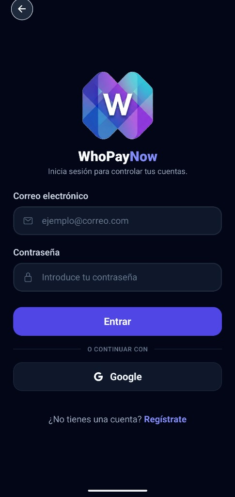

WhoPayNow
Aplicación móvil inteligente para dividir gastos compartidos de forma rápida y sencilla mediante escaneo de tickets con IA (Google Gemini), desarrollada con React Native, Expo y Supabase.

Titulado en DAW y estudiante de ASIX. Creo aplicaciones web con React, PHP y SQL, y automatizo sistemas con PowerShell, Microsoft Entra ID (Azure AD) y Linux. Me muevo igual de cómodo en el código que en los servidores.
Aplicación móvil inteligente para dividir gastos compartidos de forma rápida y sencilla mediante escaneo de tickets con IA (Google Gemini), desarrollada con React Native, Expo y Supabase.

Institut Puig Castellar
Formación orientada a la administración de sistemas operativos, seguridad informática, servicios de red y entornos cloud.
Escola del Treball de Barcelona
Especialización en desarrollo Frontend, Backend, patrones de diseño y despliegue.
Institut Tecnològic de Barcelona (ITB)
Fundamentos de redes de computadores, montaje de hardware y administración de SO.
BAU, Centre Universitari d'Arts i Disseny — Barcelona
Responsable de las aplicaciones y portales web de la universidad y del desarrollo continuo del sistema de gestión universitaria (UMS). Automatización de la gestión de usuarios y permisos con PowerShell y Microsoft Entra ID (Azure AD), SEO técnico e infraestructura en VPS y Cloudflare.
BAU, Centre Universitari d'Arts i Disseny — Barcelona
Gestión de las plataformas web y aplicaciones de la universidad, y diseño y desarrollo de un nuevo sistema de gestión universitaria (UMS) que centraliza los procesos académicos.
VINOR SERVIZ LTD — Sofía (Bulgaria)
Prácticas Erasmus+ enfocadas en el mantenimiento y reparación de ordenadores, configuración y administración de redes locales, y soporte en herramientas de ofimática. Funciones y comunicación realizadas íntegramente en inglés.